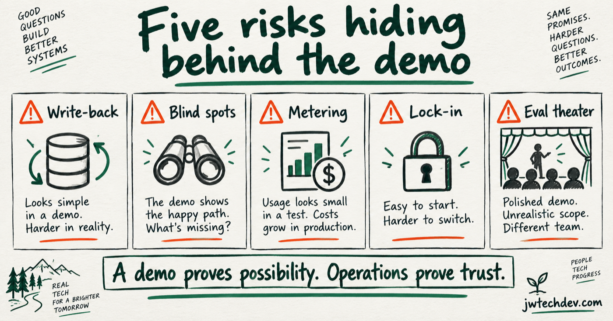

Five production agent risks hiding behind the demo
A polished agent demo proves possibility. It does not prove that writes are safe, traces are complete, costs are controlled, runtimes are portable, or evaluations reflect reality.

Quick answer
The happy path is the least interesting production test. Ask what the agent can change, what evidence is missing, how usage is billed, how portable the workflow is, and whether a failed evaluation actually stops release.
1. Write-back risk
Vendor MCP servers can expose create, update, approve, activate, and delete operations. A mistake can reach customers or systems of record. Classify tools by action risk, start read-only, use sandboxes, and require approval for consequential writes.
2. Observability blind spots
A model trace without tool identity, target, approval state, cost, and artifact references cannot explain the workflow. Build one trace contract across model, MCP, A2A, and vendor hops. Keep sensitive arguments and results opt-in.
3. Vendor metering
Model tokens are only one part of agent cost. Runtime duration, tool APIs, vendor-native agent interactions, data retrieval, observability storage, retries, and human review can all be metered.
Track cost at the task and outcome level, not only at the model call.
4. Runtime lock-in
Managed runtimes can remove real operational work, but workflow semantics should not disappear inside one platform. Keep tool contracts, handoff schemas, eval datasets, trace fields, and artifact formats explicit enough to move.
5. Eval theater
An evaluation dashboard can create confidence without control. Define thresholds before the run, include realistic failure cases, score tool choice and policy compliance, and block promotion when a release criterion fails.
If every release passes after someone explains away the failures, the system is measuring performance, not assuring it.
Production checklist
For each workflow, identify write classes, approval boundaries, trace requirements, vendor and runtime cost units, portability dependencies, eval thresholds, rollback behavior, and the owner who receives an escalation.
A demo proves possibility. Operations prove trust.
Sources checked
Want the starter kit?
Learn the infrastructure vocabulary behind production AI systems.
Get resources